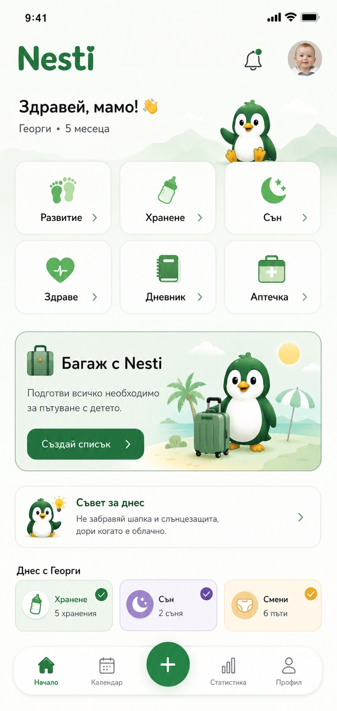
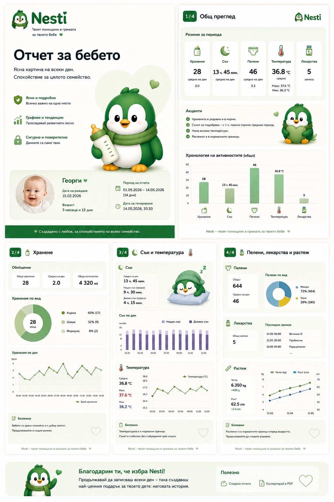

Всичко важно за вашето дете
Спокойствие и яснота
Спокойствие и яснота
за всеки родителски момент ♥
Nesti е твоят помощник в грижата за бебето — събира хранене, сън, здраве, дневник, аптечка, „Багаж с Nesti“ и полезен отчет за лекар на едно сигурно и уютно място.
✓ Без реклами
✓ Данните са под твой контрол
✓ Работи ясно и без излишна сложност

Ново в Развитие
Периоди на промяна — когато Nesti знае кога да ти подскаже.
Nesti следи възрастта на детето и показва динамична карта само когато то наближава или е в ориентировъчен период, в който при някои бебета са възможни промени в съня, апетита и поведението.
Не стои постоянно на HomeКартата се появява само около съответния възрастов прозорец.
Следи индивидуалния ритъмПри достатъчно записи Nesti може да забележи промяна спрямо обичайното за конкретното дете.
Без фалшиво точни „кризи“Показва ориентировъчен период и ясно напомня кога не бива всичко да се отдава на „скок“.
Възможен период на промяна
появява се само когато е релевантно
Георги е във възраст, в която са възможни промени в съня и поведението.
Nesti може да сравни последните записи с обичайния му ритъм и да ти подскаже какво да наблюдаваш.
Когато няма наближаващ или активен период, началният екран остава в оригиналния си заключен вид.
Приложението в реален вид
Истинската начална страница е в центъра.
Тук няма измислени екрани. Показан е реалният заключен home screen на Nesti — с шестте основни карти, отделната карта „Багаж с Nesti“, „Съвет за днес“ и обобщението „Днес с Георги“.
Ясно началоОще при първото влизане се вижда всичко важно.
Отделна travel функция„Багаж с Nesti“ стои ясно и видимо в приложението.
Практично всеки денПо-малко чудене, повече спокойствие.
Начало
Багаж с Nesti
Багаж с Nesti
Подготви всичко необходимо за излети, пътувания и ежедневни приключения с бебето.
- Създай персонализиран списък
- Отбелязвай и следи лесно
- Никога не забравяй важните неща
Отчет за бебето
4 страници
Ясна картина на всеки ден. Спокойствие за цялото семейство.
Примерният PDF показва какво би съдържал отчетът за лекар — обзор, хранене, сън и температура, пелени, лекарства и растеж.

Създадено с любов
За спокойствието на всяко семейство.
„Nesti ни помага всеки ден — лесно следим хранене, сън и развитие. А отчетът за лекар ни дава увереност, че не пропускаме нищо важно.“
★★★★★
Всичко важно — на едно място
Дай най-доброто на своето бебе.